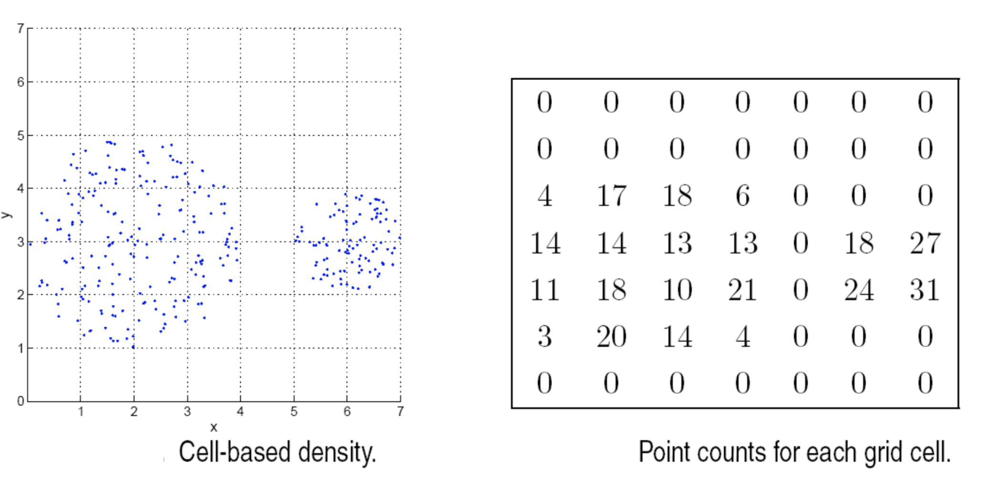
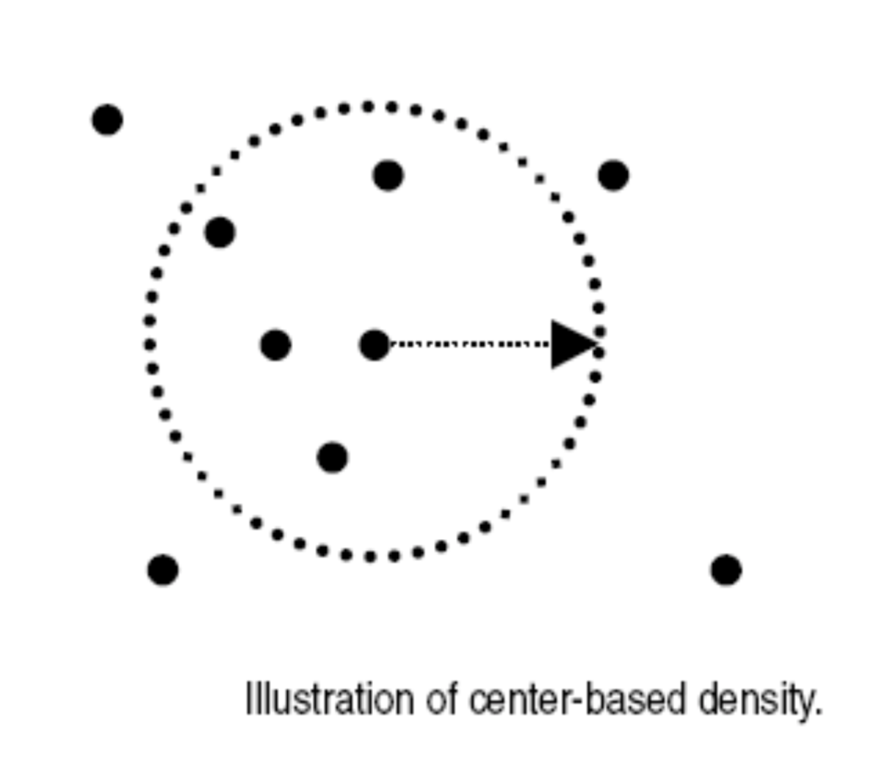

相似性和不相似性
- 相似性：数值越大越相似，取值在
[0, 1] 之间。
- 不相似性：越小越相似，最小的不相似性取值为
0。
- 接近性：相似性或不相似性。
对于 p 和 q 两个对象的属性值，有：
| 属性类型 |
不相似性 |
相似性 |
| Nominal |
d={01if p=qif p≠q |
s={10if p=qif p≠q |
| Ordinal |
d=n−1∣p−q∣ |
s=1−n−1∣p−q∣ |
| Interval/Radio |
d=∣p−q∣ |
s=−d,s=1+d1,s=1−maxd−mindd−mind |
欧几里得距离
dist=⎷k=1∑n(pk−qK)2
如果尺度不同需要标准化。
契诃夫距离
dist=(k=1∑n∣pk−qK∣r)r1
r 不同的含义不同：
- r=1, 曼哈顿距离
- r=2, 欧几里得距离
- r→∞, 上确界距离
马氏距离
s(p,q)=(p−q)Σ−1(p−q)T
其中 Σ 是数据的协方差矩阵。
余弦相似度
cos(d1,d2)=∣∣d1∣∣ ∣∣d2∣∣d1⋅d2
扩展的杰卡德系数(Tanimoto)
T(p,q)=∥p∥2+∥q∥2−p⋅qp⋅q
当属性为二元属性时退化为杰卡德系数
相关性
pk′=std(p)(pk−mean(p))
qk′=std(q)(qk−mean(q))
correlation(p,q)=p′⋅q′
组合相似性
δk={01otherwise
当第 k 个属性是二元非对称属性且取值都为 0 时、或值缺失时 δk 为 0 否则为 1.
similarity(p,q)=∑k=1nδk∑k=1nδksk
也可以考虑不同的权重
similarity(p,q)=∑k=1nδk∑k=1nwkδksk
distance(p,q)=(k=1∑nwk∣pk−qk∣r)r1
欧几里得密度
基于 cell 的方法直接计算每个格子当中的点的个数：

基于中心的方法计算一个点周围一个具体半径中的点的个数。
